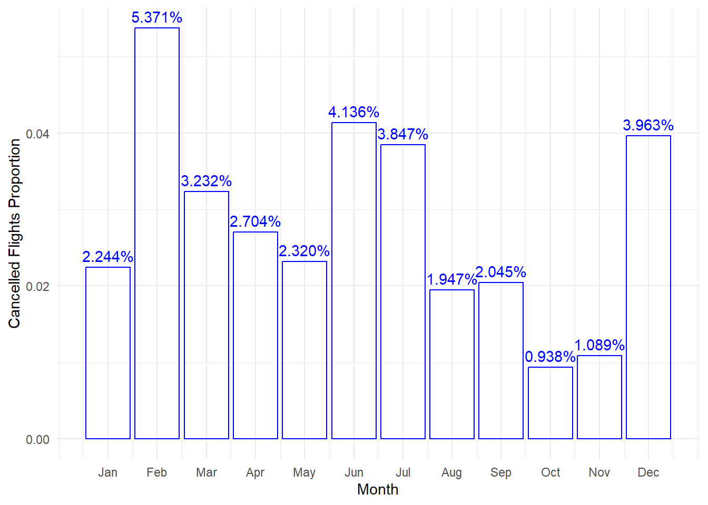
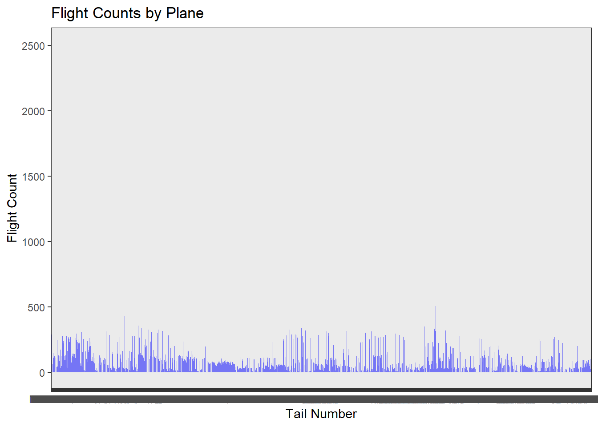
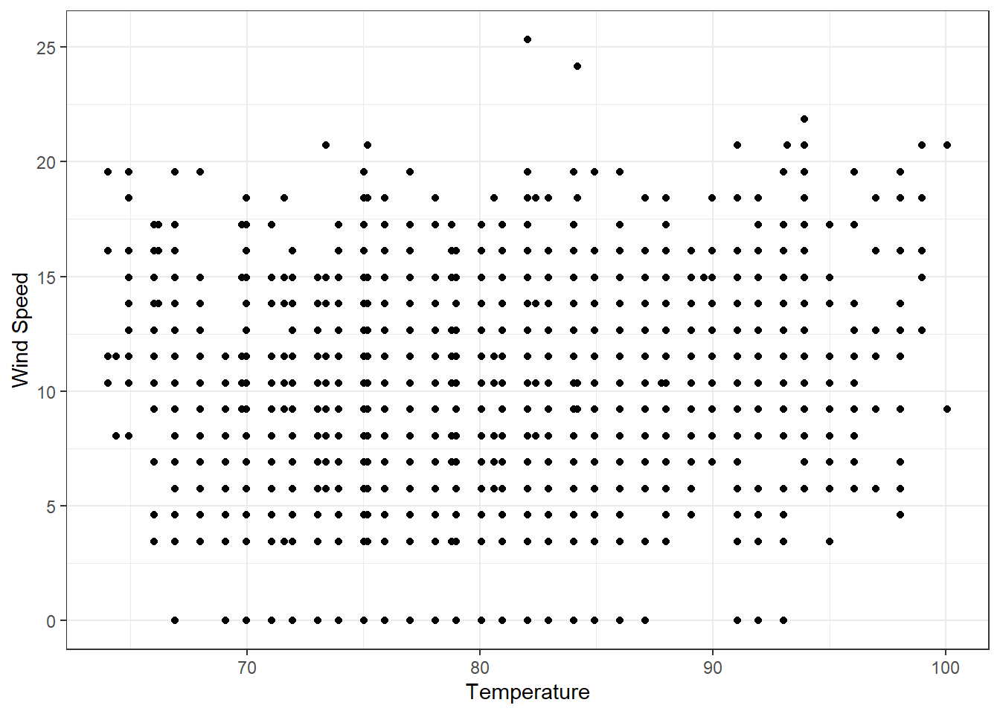
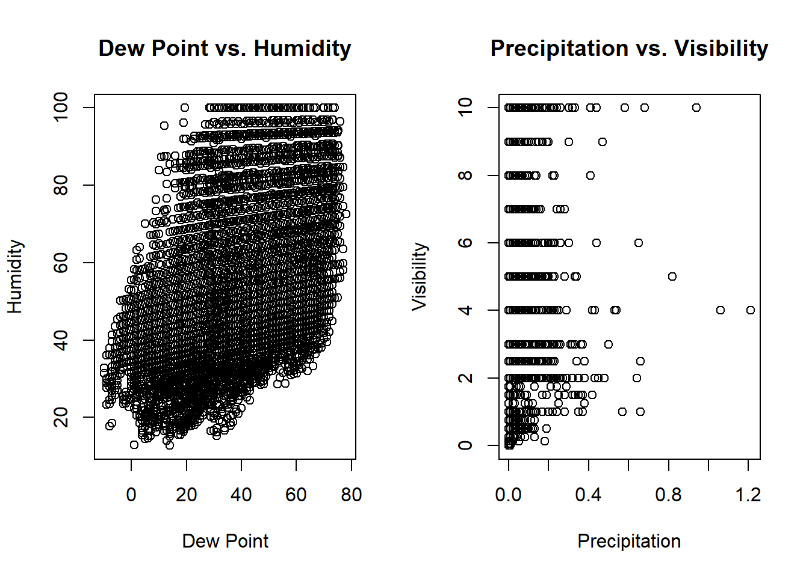
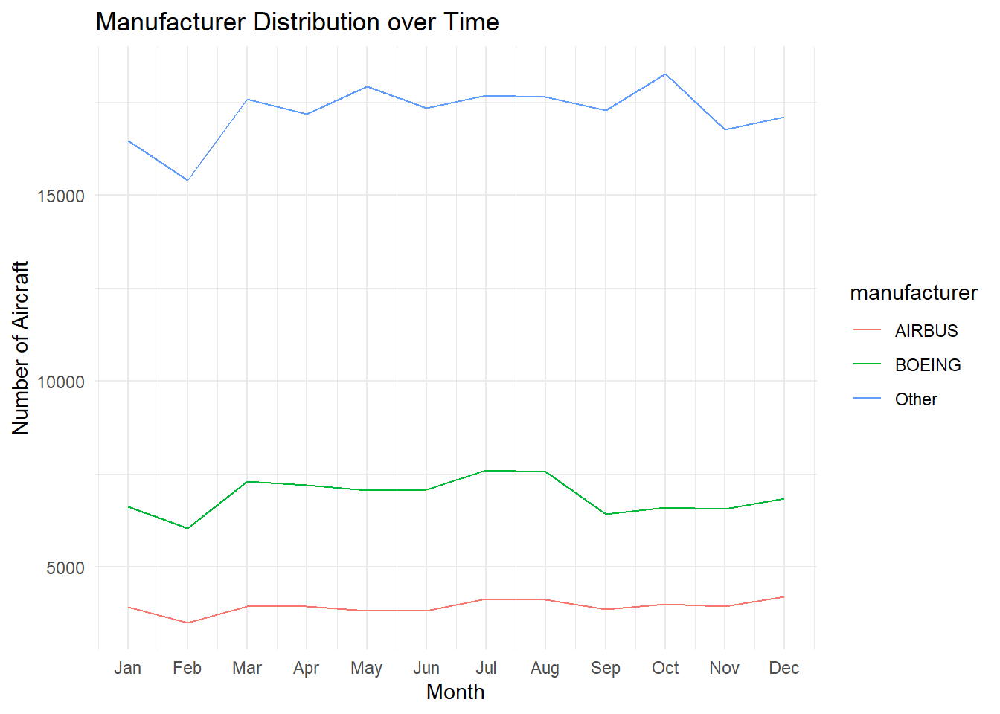
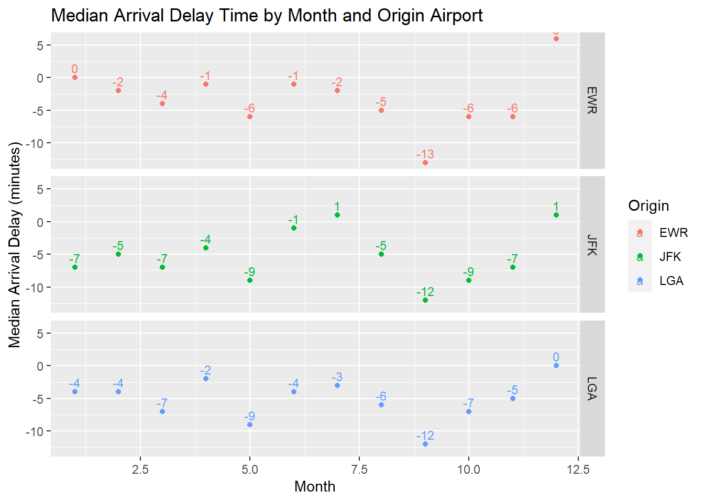
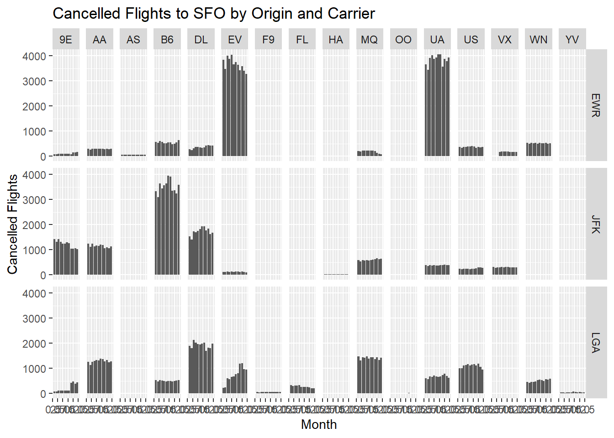
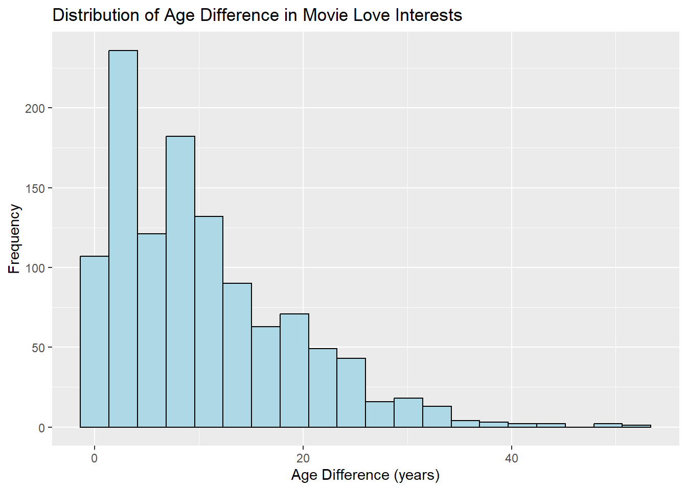

Homerwork 1
Data Manipulation
Problem 1: Use logical operators to find flights that:
- Q1: Had an arrival delay of two or more hours (\> 120 minutes)
Q1: Answer: 10,034 Flights
- Q2: Flew to Houston (IAH or HOU)
Q2: Answer: 7,198 Flights
- Q3: Were operated by United (`UA`), American (`AA`), or Delta (`DL`)
Q3: Answer: 13,954 Flights
- Q4: Departed in summer (July, August, and September)
Q4: Answer: 86,326 Flights
- Q5: Arrived more than two hours late, but didn't leave late
Q5: Answer: 29 Flights
- Q6: Were delayed by at least an hour, but made up over 30 minutes in flight
Q6: Answer: 1,948 FlightsCode
# Q1: The flights delayed more than 120 minutes
q1_flights <- flights %>%
filter(arr_delay > 120)
# Q2: The flights whihch destination are Huston
q2_flights <- flights %>%
filter(dest %in% c("IAH", "HOU"))
# Q3: Were operated
q3_flights <- flights %>%
filter(carrier %in% c("UA", "AA", "DL"))
# Q4: The flights depearted in July, August, September
q4_flights <- flights %>%
filter(month %in% c(7, 8, 9))
# Q5: Arrived more than two hours late, but didn’t leave late Were delayed by at least an hour, but made up over 30 minutes in flight
q5_flights <- flights %>%
filter(arr_delay > 120,
dep_delay <= 0)
# Q6: Were delayed by at least an hour, but made up over 30 minutes in flight
q6_flights <- flights %>%
filter(dep_delay >= 60,
(arr_delay - dep_delay) > 30)
# showing answer to each question
answer <- data.frame(
Q1 = nrow(q1_flights),
Q2 = nrow(q2_flights),
Q3 = nrow(q3_flights),
Q4 = nrow(q4_flights),
Q5 = nrow(q5_flights),
Q6 = nrow(q6_flights)
)
print(answer) Q1 Q2 Q3 Q4 Q5 Q6
1 10034 9313 139504 86326 29 1948Problem 2: What months had the highest and lowest proportion of cancelled flights? Interpret any seasonal patterns. To determine if a flight was cancelled use the following code
Answer : When organizing the data and examining the bar graph, it was found that the month with the highest percentage of canceled flights was February, at 5.371%. Conversely, the month with the lowest percentage of canceled flights was October, at 0.938%.
flights %>%
filter(is.na(dep_time)) Code
# calculating the proportion of flights that cancelled
cancelled_proportion <- flights %>%
group_by(month) %>%
summarise(cancelled_proportion = sum(is.na(dep_delay) | is.na(arr_delay)) / n())
# Making bar graph
ggplot(cancelled_proportion, aes(x = month, y = cancelled_proportion)) +
geom_bar(stat = "identity", fill = "transparent", color = "blue") +
geom_text(aes(label = scales::percent(cancelled_proportion)), vjust = -0.5, color = "blue") +
scale_x_continuous(breaks = 1:12, labels = month.abb) +
labs(x = "Month", y = "Cancelled Flights Proportion") +
theme_minimal()
Problem 3: What plane (specified by the tailnum variable) traveled the most times from New York City airports in 2013? Please left_join() the resulting table with the table planes (also included in the nycflights13 package).
For the plane with the greatest number of flights and that had more than 50 seats, please create a table where it flew to during 2013.
Answer: Based on the table as shown below, N725MQ is the plane which flew most during 2013 and the number of the flights is 575.
Code
# Filter the flights dataset for the year 2013
flights_2013 <- flights[flights$year == 2013, ]
# Left join the flights dataset with the planes dataset
merged_table <- dplyr::left_join(flights_2013, planes, by = "tailnum")
# Count the number of flights for each plane
flight_counts <- merged_table %>% dplyr::count(tailnum, sort = TRUE)
# Set options to display more columns in the table
options(width = 100)
# Set options to display all digits for numeric columns
options(digits = 22)
# Identify the top 10 planes with the highest number of flights
top_10_planes <- head(flight_counts, 10)
# Display the top 10 planes in a table
top_10_planes# A tibble: 10 × 2
tailnum n
<chr> <int>
1 <NA> 2512
2 N725MQ 575
3 N722MQ 513
4 N723MQ 507
5 N711MQ 486
6 N713MQ 483
7 N258JB 427
8 N298JB 407
9 N353JB 404
10 N351JB 402Code
kable(top_10_planes)| tailnum | n |
|---|---|
| NA | 2512 |
| N725MQ | 575 |
| N722MQ | 513 |
| N723MQ | 507 |
| N711MQ | 486 |
| N713MQ | 483 |
| N258JB | 427 |
| N298JB | 407 |
| N353JB | 404 |
| N351JB | 402 |
Code
# Create a bar graph of flight counts for each plane
library(ggplot2)
ggplot(data = flight_counts, aes(x = tailnum, y = n)) +
geom_bar(stat = "identity", fill = "blue", alpha = 0.5) +
labs(x = "Tail Number", y = "Flight Count", title = "Flight Counts by Plane") +
theme_bw()
Problem 4: The nycflights13 package includes a table (weather) that describes the weather during 2013. Use that table to answer the following questions:
- Q1: What is the distribution of temperature (`temp`) in July 2013? Identify any important outliers in terms of the `wind_speed` variable.
Q1: Answer: It seems that two data which exceeds wind speed as of 22.5 are the outliers in terms of the 'wind_speed' variable.
- Q2: What is the relationship between `dewp` and `humid`?
Q2: Answer: Correration coefficient between dewp and humid is 51.2%. And as shown in the graph, it seems slightly positive relationship between dewp and humid.
- What is the relationship between `precip` and `visib`?
Q3: Answer: Correration coefficient between precip and visib is -32.0%. And as shown in the graph, it seems slightly negative relationship between dewp and humid.Code
# Get the weather dataset
weather <- nycflights13::weather
# Extract data for July 2013
july_2013_weather <- subset(weather, month == 7 & year == 2013)
# Visualize the distribution of `temp` and its relationship with `wind_speed`
library(ggplot2)
ggplot(july_2013_weather, aes(x = temp, y = wind_speed)) +
geom_point() +
labs(x = "Temperature", y = "Wind Speed") +
theme_bw()Warning: Removed 2 rows containing missing values (`geom_point()`).
Code
# Create a table to display correlation coefficients
cor_table <- matrix(NA, nrow = 2, ncol = 2,
dimnames = list(c("Dew Point", "Precipitation"),
c("Humidity", "Visibility")))
# Calculate correlation coefficients
cor_table[1, 2] <- cor(weather$dewp, weather$humid)
cor_table[2, 2] <- cor(weather$precip, weather$visib)
# Display the correlation coefficients table
cor_table Humidity Visibility
Dew Point NA NA
Precipitation NA -0.3199117771945496069286Code
# Create scatter plots for dewp vs. humid and precip vs. visib
par(mfrow = c(1, 2))
# Scatter plot for dewp vs. humid
plot(weather$dewp, weather$humid, xlab = "Dew Point", ylab = "Humidity",
main = "Dew Point vs. Humidity")
# Scatter plot for precip vs. visib
plot(weather$precip, weather$visib, xlab = "Precipitation", ylab = "Visibility",
main = "Precipitation vs. Visibility")
Code
# Reset the plotting layout
par(mfrow = c(1, 1))
# Calculate correlation and additional statistics for dewp vs. humid
cor_dewp_humid <- cor.test(weather$dewp, weather$humid)
cor_dewp_humid_table <- data.frame(
Variable1 = "Dew Point",
Variable2 = "Humidity",
Correlation = cor_dewp_humid$estimate,
P_Value = cor_dewp_humid$p.value,
stringsAsFactors = FALSE
)
# Calculate correlation and additional statistics for precip vs. visib
cor_precip_visib <- cor.test(weather$precip, weather$visib)
cor_precip_visib_table <- data.frame(
Variable1 = "Precipitation",
Variable2 = "Visibility",
Correlation = cor_precip_visib$estimate,
P_Value = cor_precip_visib$p.value,
stringsAsFactors = FALSE
)
# Display the correlation tables
kable(cor_dewp_humid_table)| Variable1 | Variable2 | Correlation | P_Value | |
|---|---|---|---|---|
| cor | Dew Point | Humidity | 0.512195202542813698976 | 0 |
Code
kable(cor_precip_visib_table)| Variable1 | Variable2 | Correlation | P_Value | |
|---|---|---|---|---|
| cor | Precipitation | Visibility | -0.3199117771945496069286 | 0 |
Problem 5: Use the flights and planes tables to answer the following questions:
- Q1: How many planes have a missing date of manufacture?
Q1: Answer: There are 70 planes which has missing date of manufacture.
- Q2: What are the five most common manufacturers?
Q2: Answer: As shown in the table below, Boeing, Airbus Industrie, Bombardier Inc, Airbus, and Embraer are the five most common manufactures.
- Q3: Has the distribution of manufacturer changed over time as reflected by the airplanes flying from NYC in 2013? (Hint: you may need to use case_when() to recode the manufacturer name and collapse rare vendors into a category called Other.)
Q3: As shown in the graph, Production volume is high from March through August and relatively low in the other months. February has the lowest airplane production volume due to the shorter number of days than the other months.Code
# Load the flights and planes tables
flights <- nycflights13::flights
planes <- nycflights13::planes
# Count the number of planes with missing date of manufacture
missing_manufacture <- sum(is.na(planes$year))
# Identify the five most common manufacturers
top_manufacturers <- head(sort(table(planes$manufacturer), decreasing = TRUE), 5)
# Create a data frame for flights from NYC in 2013
flights_2013_NYC <- flights[flights$year == 2013 & flights$origin %in% c("JFK", "LGA", "EWR"), ]
flights_2013_NYC <- merge(flights_2013_NYC, planes, by = "tailnum")
# Recode manufacturer and collapse rare vendors into "Other" category
library(dplyr)
flights_2013_NYC <- flights_2013_NYC %>%
mutate(manufacturer = case_when(
manufacturer %in% top_manufacturers ~ as.character(manufacturer),
TRUE ~ "Other"
))
# Checking lenght of flights_2013_NYC$year and flights_2013_NYC$manufacturer
nrow(flights_2013_NYC)[1] 284170Code
length(flights_2013_NYC$year)[1] 0Code
length(flights_2013_NYC$manufacturer)[1] 284170Code
# Display the results
missing_manufacture[1] 70Code
top_manufacturers
BOEING AIRBUS INDUSTRIE BOMBARDIER INC AIRBUS EMBRAER
1630 400 368 336 299 Code
# Display the results using kable
kable(data.frame(missing_manufacture), caption = "Planes with Missing Date of Manufacture")| missing_manufacture |
|---|
| 70 |
Code
kable(data.frame(top_manufacturers), caption = "Top 5 Manufacturers")| Var1 | Freq |
|---|---|
| BOEING | 1630 |
| AIRBUS INDUSTRIE | 400 |
| BOMBARDIER INC | 368 |
| AIRBUS | 336 |
| EMBRAER | 299 |
Code
# Filter flights from NYC in 2013 and merge with planes table
flights_2013_NYC <- flights %>%
filter(year == 2013, origin %in% c("JFK", "LGA", "EWR")) %>%
left_join(planes, by = "tailnum")
# Recode manufacturer and collapse rare vendors into "Other" category
flights_2013_NYC <- flights_2013_NYC %>%
mutate(manufacturer = case_when(
manufacturer %in% c("BOEING", "AIRBUS") ~ as.character(manufacturer),
TRUE ~ "Other"
))
# Calculate the manufacturer distribution by year
manufacturer_distribution <- flights_2013_NYC %>%
group_by(month, manufacturer) %>%
summarize(count = n()) %>%
ungroup()`summarise()` has grouped output by 'month'. You can override using the `.groups` argument.Code
# Pivot the data to create a table format
manufacturer_table <- manufacturer_distribution %>%
pivot_wider(names_from = manufacturer, values_from = count, values_fill = 0)
# Display the manufacturer distribution over time
kable(manufacturer_table)| month | AIRBUS | BOEING | Other |
|---|---|---|---|
| 1 | 3916 | 6623 | 16465 |
| 2 | 3515 | 6048 | 15388 |
| 3 | 3948 | 7312 | 17574 |
| 4 | 3949 | 7197 | 17184 |
| 5 | 3826 | 7063 | 17907 |
| 6 | 3831 | 7085 | 17327 |
| 7 | 4145 | 7597 | 17683 |
| 8 | 4131 | 7557 | 17639 |
| 9 | 3872 | 6425 | 17277 |
| 10 | 4013 | 6613 | 18263 |
| 11 | 3954 | 6557 | 16757 |
| 12 | 4202 | 6835 | 17098 |
Code
# Aggregate the data by month and manufacturer
manufacturer_monthly <- flights_2013_NYC %>%
group_by(month, manufacturer) %>%
summarize(count = n()) %>%
ungroup()`summarise()` has grouped output by 'month'. You can override using the `.groups` argument.Code
# Filter the top 5 manufacturers based on total aircraft count
top_5_manufacturers <- manufacturer_monthly %>%
group_by(manufacturer) %>%
summarise(total_count = sum(count)) %>%
top_n(5, total_count) %>%
select(manufacturer)
# Merge with the aggregated data
top_manufacturer_monthly <- manufacturer_monthly %>%
filter(manufacturer %in% top_5_manufacturers$manufacturer)
# Create a line graph
ggplot(top_manufacturer_monthly, aes(x = month, y = count, group = manufacturer, color = manufacturer)) +
geom_line() +
labs(x = "Month", y = "Number of Aircraft", title = "Manufacturer Distribution over Time") +
scale_x_continuous(breaks = 1:12, labels = month.abb) +
theme_minimal()
Problem 6: Use the flights and planes tables to answer the following questions:
- Q1: What is the oldest plane (specified by the tailnum variable) that flew from New York City airports in 2013?
Q1: Answer: Oldest plane is N381AA, which manufactured in 1956.
- Q2:How many airplanes that flew from New York City are included in the planes table?
Q2: Answer: There are 336776 airplanes that flew from New York.Code
# Create the 'flights_planes' object by merging the 'flights' and 'planes' tables
flights_planes <- merge(flights, planes, by.x = "tailnum", by.y = "tailnum")
# Count the number of airplanes from NYC included in the planes table
num_airplanes_01 <- flights_planes %>%
arrange(year.y) %>%
group_by(year.y) %>%
count() %>%
top_n(15)Selecting by nCode
# Print the result
kable(num_airplanes_01, format = "markdown")| year.y | n |
|---|---|
| 1956 | 22 |
| 1959 | 117 |
| 1963 | 52 |
| 1965 | 4 |
| 1967 | 22 |
| 1968 | 43 |
| 1972 | 25 |
| 1973 | 22 |
| 1974 | 103 |
| 1975 | 92 |
| 1976 | 544 |
| 1977 | 187 |
| 1978 | 26 |
| 1979 | 64 |
| 1980 | 109 |
| 1983 | 246 |
| 1984 | 115 |
| 1985 | 994 |
| 1986 | 1800 |
| 1987 | 3506 |
| 1988 | 3856 |
| 1989 | 3116 |
| 1990 | 5394 |
| 1991 | 6002 |
| 1992 | 7696 |
| 1993 | 3358 |
| 1994 | 2714 |
| 1995 | 1378 |
| 1996 | 1799 |
| 1997 | 6008 |
| 1998 | 17231 |
| 1999 | 19373 |
| 2000 | 22334 |
| 2001 | 26889 |
| 2002 | 23741 |
| 2003 | 15069 |
| 2004 | 15706 |
| 2005 | 14369 |
| 2006 | 13203 |
| 2007 | 15300 |
| 2008 | 17878 |
| 2009 | 6632 |
| 2010 | 3797 |
| 2011 | 6046 |
| 2012 | 7252 |
| 2013 | 4630 |
| NA | 5306 |
Code
# Filter airplanes with year.y equal to 1956
num_airplanes <- flights_planes %>%
filter(year.y == 1956) %>%
count(tailnum)
# Print the result
kable(num_airplanes, format = "markdown")| tailnum | n |
|---|---|
| N381AA | 22 |
Code
# Count the number of airplanes that flew from New York City
num_planes_03 <- sum(planes$origin %in% c("JFK", "LGA", "EWR"))Warning: Unknown or uninitialised column: `origin`.Code
# Print the result
kable(num_planes_03)| x |
|---|
| 0 |
Code
# Count the number of airplanes from NYC included in the flights table
num_airplanes <- flights %>%
filter(origin %in% c("JFK", "LGA", "EWR")) %>%
group_by(year) %>%
summarize(total = n()) %>%
arrange(year)
# Print the table using kable
kable(num_airplanes, format = "markdown", caption = "Number of Airplanes from NYC by Year")| year | total |
|---|---|
| 2013 | 336776 |
Problem 7: Use the nycflights13 to answer the following questions:
- Q1: What is the median arrival delay on a month-by-month basis in each airport?
- Q2: For each airline, plot the median arrival delay for each month and origin airport.
Q1&Q2: Answer: Both information can be found in the graph as shown below.Code
# Data preparation
data(flights)
flights <- select(flights, month, origin, arr_delay)
# Calculate median arrival delay time on a month-by-month basis in each airport
median_delay <- flights %>%
group_by(month, origin) %>%
summarise(median_delay = median(arr_delay, na.rm = TRUE))`summarise()` has grouped output by 'month'. You can override using the `.groups` argument.Code
# Create the graph
graph <- ggplot(median_delay, aes(x = month, y = median_delay, color = origin)) +
geom_point() +
geom_text(aes(label = median_delay), vjust = -0.5, size = 3) +
labs(x = "Month", y = "Median Arrival Delay (minutes)", color = "Origin") +
facet_grid(rows = vars(origin)) +
ggtitle("Median Arrival Delay Time by Month and Origin Airport")
# Print the graph
print(graph)
Problem 8: Let’s take a closer look at what carriers service the route to San Francisco International (SFO). Join the flights and airlines tables and count which airlines flew the most to SFO. Produce a new dataframe, fly_into_sfo that contains three variables: the name of the airline, e.g., United Air Lines Inc. not UA, the count (number) of times it flew to SFO, and the percent of the trips that that particular airline flew to SFO.
Q8: Answer: As shown in the tables, United Airlines. INC is the most airlines which flew to SFO.
Code
# Load the necessary data
data(flights)
data(airlines)
# Join flights and airlines tables and filter for flights to SFO
fly_into_sfo <- flights %>%
inner_join(airlines, by = "carrier") %>%
filter(dest == "SFO") %>%
# Group the data by airline name
group_by(name) %>%
# Calculate the count and percentage of flights to SFO for each airline
summarise(count = n(), percent = sprintf("%.2f%%", n() / nrow(.) * 100)) %>%
# Arrange the data in descending order of count
arrange(desc(count))
# Print the resulting dataframe
kable(fly_into_sfo)| name | count | percent |
|---|---|---|
| United Air Lines Inc. | 6819 | 51.15% |
| Virgin America | 2197 | 16.48% |
| Delta Air Lines Inc. | 1858 | 13.94% |
| American Airlines Inc. | 1422 | 10.67% |
| JetBlue Airways | 1035 | 7.76% |
And here is some bonus ggplot code to plot your dataframe
Problem 9: Let’s take a look at cancellations of flights to SFO. We create a new dataframe cancellations as follows
We can create multiple graphs to show the number of canceled flights per month for each combination of Origin (EWR, JFK, LGA) and Carrier using the following steps. I will also provide the code separately.
Aggregate the number of canceled flights by Origin, Carrier, and month using the
cancellationsdataframe.Create the base of the graph using the
ggplot()function.Display the number of canceled flights as bar graphs using the
geom_col()function.Create a grid of graphs based on the combination of Origin and Carrier using the
facet_grid()function.Set the graph title and axis labels using the
labs()function.
Code
# Create the 'cancellations' object with your desired data
cancellations <- flights
# Group cancellations by Origin, Carrier, and month
cancellation_counts <- cancellations %>%
group_by(origin, carrier, month) %>%
summarise(cancelled_flights = n())`summarise()` has grouped output by 'origin', 'carrier'. You can override using the `.groups`
argument.Code
# Create the graph
ggplot(cancellation_counts, aes(x = month, y = cancelled_flights)) +
geom_col() +
facet_grid(origin ~ carrier) +
labs(title = "Cancelled Flights to SFO by Origin and Carrier",
x = "Month",
y = "Cancelled Flights")
I want you to think how we would organise our data manipulation to create the following plot. No need to write the code, just explain in words how you would go about it.

Problem 10: On your own – Hollywood Age Gap
The website https://hollywoodagegap.com is a record of THE AGE DIFFERENCE IN YEARS BETWEEN MOVIE LOVE INTERESTS. This is an informational site showing the age gap between movie love interests and the data follows certain rules:
- The two (or more) actors play actual love interests (not just friends, coworkers, or some other non-romantic type of relationship)
- The youngest of the two actors is at least 17 years old
- No animated characters
The age gaps dataset includes “gender” columns, which always contain the values “man” or “woman”. These values appear to indicate how the characters in each film identify and some of these values do not match how the actor identifies. We apologize if any characters are misgendered in the data!
The following is a data dictionary of the variables used
| variable | class | description |
|---|---|---|
| movie_name | character | Name of the film |
| release_year | integer | Release year |
| director | character | Director of the film |
| age_difference | integer | Age difference between the characters in whole years |
| couple_number | integer | An identifier for the couple in case multiple couples are listed for this film |
| actor_1_name | character | The name of the older actor in this couple |
| actor_2_name | character | The name of the younger actor in this couple |
| character_1_gender | character | The gender of the older character, as identified by the person who submitted the data for this couple |
| character_2_gender | character | The gender of the younger character, as identified by the person who submitted the data for this couple |
| actor_1_birthdate | date | The birthdate of the older member of the couple |
| actor_2_birthdate | date | The birthdate of the younger member of the couple |
| actor_1_age | integer | The age of the older actor when the film was released |
| actor_2_age | integer | The age of the younger actor when the film was released |
Code
# Load required packages
library(tidyverse)
# Read the dataset
age_gaps <- readr::read_csv('https://raw.githubusercontent.com/rfordatascience/tidytuesday/master/data/2023/2023-02-14/age_gaps.csv')Rows: 1155 Columns: 13
── Column specification ────────────────────────────────────────────────────────────────────────────
Delimiter: ","
chr (6): movie_name, director, actor_1_name, actor_2_name, character_1_gender, character_2_gender
dbl (5): release_year, age_difference, couple_number, actor_1_age, actor_2_age
date (2): actor_1_birthdate, actor_2_birthdate
ℹ Use `spec()` to retrieve the full column specification for this data.
ℹ Specify the column types or set `show_col_types = FALSE` to quiet this message.Code
# Q1: Explore the dataset
# Q2: Distribution of age_difference
ggplot(age_gaps, aes(x = age_difference)) +
geom_histogram(bins = 20, fill = "lightblue", color = "black") +
labs(title = "Distribution of Age Difference in Movie Love Interests",
x = "Age Difference (years)",
y = "Frequency")
Code
# Calculate the typical age_difference in movies
typical_age_difference <- median(age_gaps$age_difference)
# Q3: Count how frequently the half plus seven rule applies in this dataset
rule_applies <- age_gaps %>%
filter(actor_2_age > actor_1_age / 2 + 7,
actor_2_age < (actor_1_age - 7) * 2) %>%
nrow()
# Q4: Movie with the greatest number of love interests
most_love_interests <- age_gaps %>%
group_by(movie_name) %>%
summarise(total_love_interests = n()) %>%
arrange(desc(total_love_interests)) %>%
slice(1)
# Q5: Actors/actresses with the greatest number of love interests
most_love_interests_actors <- age_gaps %>%
group_by(actor_1_name) %>%
summarise(total_love_interests = n()) %>%
arrange(desc(total_love_interests)) %>%
slice(1)
# Q6: Mean and median age difference over the years
age_difference_over_years <- age_gaps %>%
group_by(release_year) %>%
summarise(mean_age_difference = mean(age_difference),
median_age_difference = median(age_difference))
# Q7: Frequency of same-gender love interests
same_gender_love_interests <- age_gaps %>%
filter(character_1_gender == character_2_gender) %>%
count()
# Print the results
typical_age_difference[1] 8Code
rule_applies[1] 795Code
most_love_interests# A tibble: 1 × 2
movie_name total_love_interests
<chr> <int>
1 Love Actually 7Code
most_love_interests_actors# A tibble: 1 × 2
actor_1_name total_love_interests
<chr> <int>
1 Keanu Reeves 24Code
age_difference_over_years# A tibble: 82 × 3
release_year mean_age_difference median_age_difference
<dbl> <dbl> <dbl>
1 1935 13 13
2 1936 21 21
3 1937 7.33 9
4 1939 12 12
5 1940 11.3 10
6 1942 20.5 20.5
7 1944 25 25
8 1946 25 25
9 1947 25 25
10 1948 23.2 25
# ℹ 72 more rowsCode
same_gender_love_interests# A tibble: 1 × 1
n
<int>
1 23How would you explore this data set? Here are some ideas of tables/ graphs to help you with your analysis
How is
age_differencedistributed? What’s the ‘typical’age_differencein movies?Answer:
As shown in the graph as below, The age difference is predominantly concentrated between 0 and 20 in the data, and beyond 20, there is a tendency for the age difference to decrease as it increases.
The typical age_difference is 8.
The
half plus seven\rule. Large age disparities in relationships carry certain stigmas. One popular rule of thumb is the half-your-age-plus-seven rule. This rule states you should never date anyone under half your age plus seven, establishing a minimum boundary on whom one can date. In order for a dating relationship to be acceptable under this rule, your partner’s age must be:
\[\frac{\text{Your age}}{2} + 7 < \text{Partner Age} < (\text{Your age} - 7) * 2\] How frequently does this rule apply in this dataset?
Answer: The rule applies to 795 movies.
Which movie has the greatest number of love interests?
Answer: It is Love actually and it has 7 love interests.
Which actors/ actresses have the greatest number of love interests in this dataset?
Answer: The actor who has greatest number of love interests is Keanu Reeves and it has 24.
Is the mean/median age difference staying constant over the years (1935 - 2022)?
Answer: No, mean and median age difference is increasing over the years. Detailes are shown in the table.
How frequently does Hollywood depict same-gender love interests?
Answer: 23
Deliverables
There is a lot of explanatory text, comments, etc. You do not need these, so delete them and produce a stand-alone document that you could share with someone. Render the edited and completed Quarto Markdown (qmd) file as a Word document (use the “Render” button at the top of the script editor window) and upload it to Canvas. You must be commiting and pushing tour changes to your own Github repo as you go along.
Details
- Who did you collaborate with: ChatGPT
- Approximately how much time did you spend on this problem set: 5-6hr
- What, if anything, gave you the most trouble: ANSWER HERE
Please seek out help when you need it, and remember the 15-minute rule. You know enough R (and have enough examples of code from class and your readings) to be able to do this. If you get stuck, ask for help from others, post a question on Slack– and remember that I am here to help too!
As a true test to yourself, do you understand the code you submitted and are you able to explain it to someone else?
Rubric
1313: Problem set is 100% completed. Every question was attempted and answered, and most answers are correct. Code is well-documented (both self-documented and with additional comments as necessary). Used tidyverse, instead of base R. Graphs and tables are properly labelled. Analysis is clear and easy to follow, either because graphs are labeled clearly or you’ve written additional text to describe how you interpret the output. Multiple Github commits. Work is exceptional. I will not assign these often.
813: Problem set is 60–80% complete and most answers are correct. This is the expected level of performance. Solid effort. Hits all the elements. No clear mistakes. Easy to follow (both the code and the output). A few Github commits.
513: Problem set is less than 60% complete and/or most answers are incorrect. This indicates that you need to improve next time. I will hopefully not assign these often. Displays minimal effort. Doesn’t complete all components. Code is poorly written and not documented. Uses the same type of plot for each graph, or doesn’t use plots appropriate for the variables being analyzed. No Github commits.